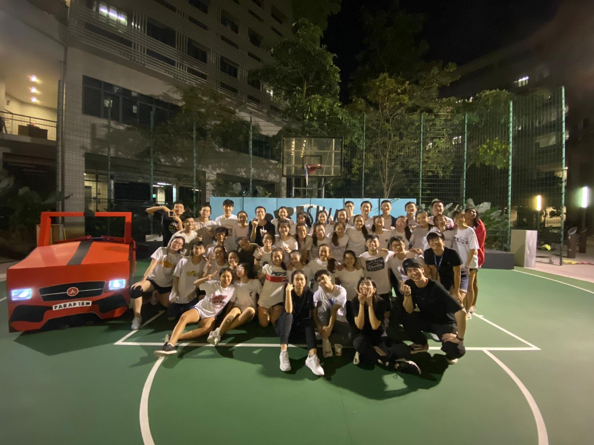

Now in Pioneer Hall, I have found another dance family who has helped me to love dance even more as a hobby of mine. Here in PARAD18M, a safe space is advocated for anyone - experienced or new to pick up dancing! This was a different experience from my previous few dance clubs and the safe environment created here is something I really treasure. As a more experienced dancer, I have learnt to break down the movements to explain to the new dancers. Hence, this has allowed me to appreciate dance even more. Seeing other people pursue dance and improve over the months of training also feels very fulfiling!

A major milestone for PARAD18M members every year is taking part in the annual Hall Olympiad Closing Ceremony (HOCC) held by NTU for all of the halls. Each hall sends a group of dancers to put up a performance and compete against one another duirng HOCC. With about 2-3 months to prepare, the timeline is very tight, especially since there are new dancers who need a bit more time to practise and master the moves. However, the resilience all of the dancers and their hardwork has really shone through and for the past two years, the items PARAD18M has put up on stage has been memorable.